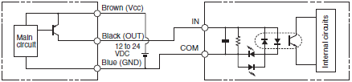
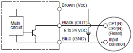

Building Automation
Industrial Automation
Power Automation & Safety


Bangladesh Distributor
Photomicro Sensors
|
|
|
|
| Safety Precautions |

These products cannot be used in safety devices for presses or other safety devices used to protect human life.
This product is designed for use in applications for sensing workpieces and workers that will not affect levels of safety.

To ensure safety, observe the following precautions.
Wiring
| Item | Examples |
| Power Supply Do not apply any voltage exceeding the operating voltage range. Applying any excessive voltage or supplying AC power (100 VAC or higher) to a DC-type sensor may cause the Sensor to explode or burn. | ・ DC 3-Wire NPN Output Sensors |
| Load Short-circuit Do not short-circuit the load. Doing so may cause the Sensor to explode or burn. | ・ DC 3-Wire NPN Output Sensors |
| Wiring Be sure to wire the Sensor correctly and be careful not to connect the polarities incorrectly, otherwise the Sensor may explode or burn. | ・ DC 3-Wire NPN Output Sensors (Example) Wrong polarity |
| ・ DC 3-Wire NPN Output Sensors (Example) Wrong polarity or wrong wiring  | |
| Connection with No Load If connected to the power supply without any load, internal elements may explode or burn. Make sure that a proper load is connected to the Sensor. | ・ DC 3-Wire NPN Output Sensor |
| AND Connections Do not use AND connections such as in the example shown in the diagram here. Voltage will be applied to the Vcc terminal without the GND terminal of Sensor 2 being securely grounded, and may cause the Sensor to fail. Depending on the model used, inrush current to Sensor 2 when Sensor 1 is turned ON may cause product failure. |
Installation
• The Photomicrosensors with Non-modulated Light (models that begin with EE-SX or EE-SY) are built into the device being used and are, therefore, not equipped to deal with interference from an external light source. When using a Photomicrosensor with Nonmodulated Light in an area exposed to an incandescent light or other external light interference, install so as to minimize the effects of external light sources.
• Mount the Photomicrosensors securely on a flat surface
• Mount the Photomicrosensors with M3 screws, using a spring washer to ensure the screws will not become loose. Use a tightening force of 0.59 N・m max.
Note: Be sure to read the precautions for the model being used before tightening the screws.
• Install so that nothing can collide with the sensing section of the Photomicrosensor. Damage to the sensing surface will cause inferior performance.
• Before using the Photomicrosensor, check to be sure that it has not become loose due to vibration or shock.
Wiring
Surge
• If there is surge in the power supply line, try connecting a capacitor (with a capacitance of 0.1 to 1 μF) or a Zener diode (ZD in the diagram below, with a rated voltage of 30 to 35 V). Use the Sensor only after confirming that the surge has been removed.
• When driving a small inductive load, such as a relay, wire as shown below. (Be sure to connect a diode to absorb the reverse voltage.)
• Separate the wiring for the Photomicrosensor from high-voltage lines or power lines. If the wiring is routed in the same conduit or duct as such lines, the Photomicrosensor may malfunction or may be damaged by inductive interference.
• Make sure that the connectors (either dedicated or commercially available) are securely locked.
Voltage Output
• A Sensor with an open-collector output can be connected to a counter with a voltage input by connecting a resistor between the power source and output. Select a resistor with reference to the following example. The resistance of the resistor is generally 4.7 kΩ and its wattage is 1/2 W for a supply voltage of 24 V and 1/4 W for 12 V.
Example
If resistance R = 4.7 kΩ for the EE-SX670, the input voltage at the high level is as follows:
And the input voltage and load current at the low level are as follows:
Input voltage VL ≤ 0.4 V (Residual voltage for 40-mA load current)
Note: Refer to the ratings of the Sensor for the residual voltage of the load current.
Handling Methods when Wiring
• Do not apply stress (external force) to the terminals as shown in the figure below. Stress may damage the terminals.
Design
Design the application so that light will be completely interrupted. We recommend that you use a metal object as the sensing object. (The light beam from an Infrared Sensor may pass through plastic sensing objects, which may make detection unstable.)
Terminate the terminals that you do not use (e.g., the L terminal or output line) and do not connect them to anything.
Precautions for Photomicrosensors with Modulated Light
When using Photomicrosensors with Modulated Light (models that begin with EE-SP), the design must take into account the effects of power source and cable length. Photomicrosensors with Modulated Light are more easily affected than Photomicrosensors with Nonmodulated Light (models that begin with EE-SX or EE-SY).
• Photomicrosensors with Modulated Light that are easily affected:
EE-SPX301/401, EE-SPY30[]/40[],
EE-SPZ301[]/401[], EE-SPY31[]/41[],
EE-SPX303N/403N, EE-SPW311/411,
EE-SPX74[]/84[], EE-SPX[][][]-W
• Photomicrosensors with Modulated Light that are not easily affected:
EE-SPX613, EE-SPY801/802
Reasons for Interference from Power and Cable Length on Photomicrosensors with Modulated Light
As explained in the Operating Principles in the Technical Explanation for Photomicrosensors, an LED emitter is pulse-lighted to produce modulated light. A large current momentarily flows to the Photomicrosensor in sync with this pulse timing. This causes a pulsating consumption current.
A photoelectric sensor incorporates a capacitor with sufficient capacity, and is virtually unaffected by the pulse of the consumption current. With a small Photomicrosensor, however, it is difficult to have a capacitor with a sufficient capacity. Accordingly, when the cable length is long or depending on the type of power source, it may become impossible to keep up with the pulse of the consumption current and operation may become unstable.
Countermeasures
Adding a Capacitor
• Attach a capacitor of 10 μF min. (e.g., a film capacitor) to the wires as close as possible to the Sensor. (Use a capacitor with a dielectric strength that is at least twice the Sensor's power supply voltage. Do not use tantalum capacitors. A short-circuit may cause the capacitor to ignite due to the large current flow.)
Cable Length
• Design the configuration so that the maximum total cable length for the Photomicrosensor with Modulated Light is 2 m.
• When using a cable longer than 2 m, attach a capacitor (e.g., an aluminum electrolytic capacitor) with a capacity of approximately 10 μF to the wires as shown below. The distance between the terminal and the capacitor must be within 2 m. Make sure that the total cable length is no longer than 5 m. To use a cable length longer than 5 m, use a PLC or other means to read the sensor output and then transmit the signals using a PLC's communications.
• Regardless of whether a Photomicrosensor with Modulated Light or a Photomicrosensor with Non-modulated Light is used, make sure that the total combined length of the Photomicrosensor cable and the connecting cable is less than 10 m.
• Although cables are capable of being extended longer than 5 m, performance is likely to be affected by noise interference from adjacent cables and other devices. Voltage drops due to the resistance of the cable material itself will also influence performance. Therefore, factors, such as the difference in voltage between the end of the cable and the sensor and noise levels, must be given full consideration.
Countermeasures for Switching Power Supplies
• Take either of the following countermeasures as required if connecting a Photomicrosensor with Modulated Light to a switching power supply.
1. Attach a capacitor of 10 μF min. to the wires as close as possible to the Photomicrosensor. (Use a capacitor with a dielectric strength that is at least twice the Photomicrosensor's power supply voltage. Do not use tantalum capacitors. A short-circuit may cause the capacitor to ignite due to the large current flow.)

2. Connect to the 0-V line of the power source or connect to the power source via a capacitor of approximately 0.47 μF to reduce the impedance of the mounting base to prevent inductive noise from entering the mounting base.
3. Connect the noise filter terminal (neutral terminal to ACG) of the switching power supply to the case (FG) and 0-V terminal of the power supply.
The line connected as mentioned above should be grounded or connected to the mounting base to ensure stable operation.
(Recommended by power supply manufacturers.)
Countermeasures to Handle Inductive Noise
4. Insert a plastic insulator of approximately 10 mm between the Sensor and the mounting base.
Effects of Inductive Noise
• When there is inductive noise in the Sensor mounting frame (metal), the output of the Sensor may be affected. In this case, ensure that there is no electrical potential difference between the Sensor 0-V terminal and the Sensor mounting frame, or put a 0.47-μF capacitor between the 0-V terminal and the frame.
Precautions for Reflective Photomicrosensors
Sensing Distance
• The Reflective Photomicrosensor model is based on sensing a sheet of white paper with a reflection factor of 90%. The sensing distance varies with the other conditions of the objects being detected.
Typical Example
EE-SPY30/40 Series
Background Objects
• Use the Sensor only after carefully studying the possibility of light entering the Sensor due to light being reflected off background objects.
Decrease reflection from the background object, e.g., by providing a sufficient distance to the background or by using a black sponge as the background.
PLC Connections
| NPN opencollector output | |
| NPN voltage output | |
| PNP opencollector output |  |
Relay Connections
| Operating from same power supply | Operating from different power supplies | |
| NPN opencollector output |
Counter Connections
| No-voltage Input | Transistor input (voltage input) | |
| NPN opencollector output |  | |
| NPN voltage output |
Other Precautions
• Do not disconnect the Connector from the Sensor when power is supplied to the Sensor. Doing so may damage the Sensor.
• Avoid installing the Sensor in the following locations to prevent malfunction or product failure:
1. Location exposed to high concentrations of dust, oil mist, etc.
2. Locations exposed to corrosive gases
3. Locations exposed directly or indirectly to water, oil, or chemical spray
4. Outdoors or locations exposed to intensive light, such as direct sunlight
• Be sure to use the Sensor under the rated ambient temperature.
• The Sensor may be dissolved by exposure to organic solvents, acids, alkali, aromatic hydrocarbons or chloride resin hydrocarbons, causing deterioration in characteristics. Do not expose the Sensor to such chemicals.